|
I am a PhD student in the Department of Industrial and Enterprise Systems Engineering at UIUC working with Richard Sowers.
I am named the William A. Chittenden II graduate fellow. |
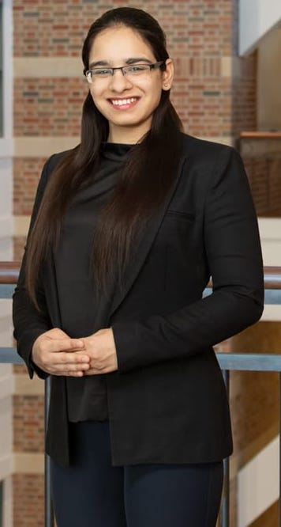 |


|
|
| Mar 2024 | Organizing the tutorial on Rating AI Trustworthiness at ACM International Conference on AI in Finance 2024. |
| Mar 2024 | Invited talk on 'Mathematics and AI in the Financial Industry' at Punjab Engineering College, India. |
| Feb 2024 | Organizing the first workshop on AI in Finance for Social Impact at AAAI 2024. |
| Nov 2023 | Organizing Women in AI and Finance workshop at ACM International Conference on AI in Finance 2023. |
| Sep 2022 | Started at J.P. Morgan AI Research and moved to New York City! I will continue working on multimodal AI and AI agents. |
| Sep 2022 | Defended my Ph.D. thesis! |
| Apr 2021 | Received the 2021 UIUC ISE Sharp Outstanding Graduate Student Award |
| Dec 2020 | Paper accepted at the IEEE Transactions on Biomedical Engineering (TBME) journal |
| Aug 2020 | Renamed the William A. Chittenden II Graduate Fellow for academic year 2020-2021 |
| Oct 2019 | Received the Kanako Miura Award by the IEEE RAS Technical Committee on Humanoid Robotics |
| Aug 2019 | Renamed the William A. Chittenden II Graduate Fellow for academic year 2019-2020 |
| Aug 2018 | Awarded the William A. Chittenden II Graduate Fellowship for academic year 2018-2019 |
| Mar 2018 | Received the 2018 Illinois Geometry Lab Research Award. Thanks Department of Mathematics@UIUC! |
| Dec 2017 | Selected as the 1st runner up for Mottier Innovation Challenge in Systems Engineering Award |
| Mar 2015 | Awarded the Charpak Research Intern Scholarship for summer of 2015 |
| Dec 2012 | Won the Legacy of Srinivasa Ramanujan Coding Competition (Awarded at the International conference on Legacy of Srinivasa Ramanujan, 2012) |
|
I am currently a Ph.D. student in the Department of Industrial Engineering at the University of Illinois at Urbana-Champaign. I am advised by Richard Sowers and also collaborated closely with Manuel Hernandez. My current research is focused on applications of machine learning for unfolding problems in health and finance domain. Prior to joining PhD, I have earned a B.S. (with honours) in Mathematics from the University of Delhi and an M.S. in Mathematics from the Indian Institute of Technology (IIT), Delhi. During my masters, my thesis was advised by Aparna Mehra. |
See some excerpts from my journey here.
Full list on All publications and Google Scholar
★ Representative work
|
|
|
|
Anant Dadu, Vipul Satone, Rachneet Kaur, Hampton Leonard, Hirotaka Iwaki, Mary Makarious, Lana Sargent, Ali Daneshmand, Sonja W. Scholz, Mike A. Nalls, Roy H. Campbell, Faraz Faghri npj Parkinson's Disease, Nature Publishing Group 2022 Project page | arXiv | Code | Interactive website | Cite The machine learning techniques presented in this study may assist providers in identifying different progression rates and trajectories in the early stages of the disease, hence allowing for more efficient and personalized healthcare deliveries. 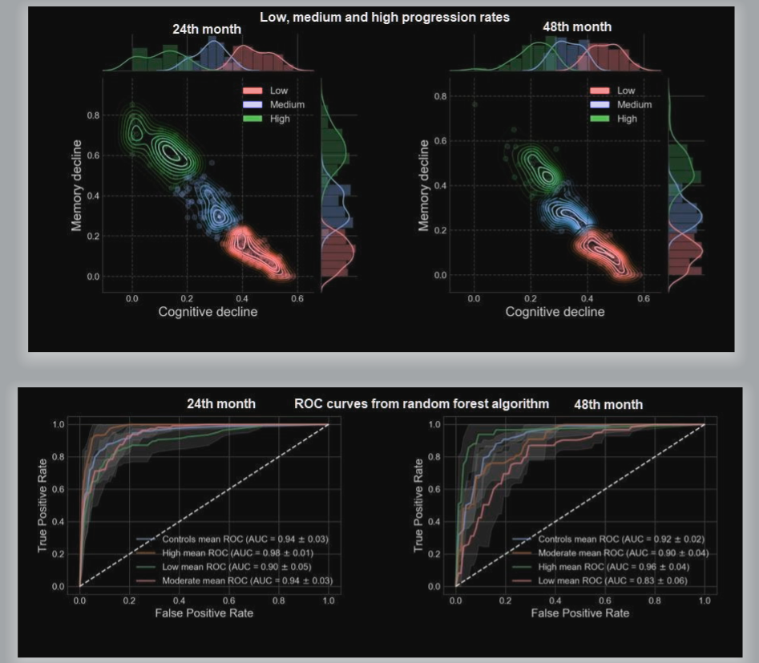 |
|
Rachneet Kaur, Clara Schaye, Kevin Thompson, Daniel C Yee, Rachel Zilz, RS Sreenivas, Richard Sowers Energy and AI, Elsevier 2021 Project page | Paper | Video | Cite We pose and study a scheduling problem for an electric load to develop an Internet of Things (IoT) control system for power appliances, which takes advantage of real-time dynamic energy pricing. 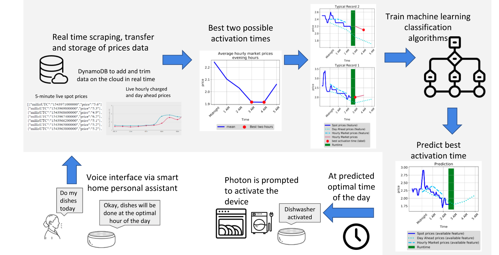 |
|
Rachneet Kaur, Zizhang Chen, Robert Motl, Manuel Hernandez, Richard Sowers IEEE Transactions on Biomedical Engineering (TBME), 2020 Project page | Paper | Video | Code | Cite Evaluating the effectiveness of a spatiotemporal and kinetic gait data-based machine learning framework for Multiple Sclerosis prediction. 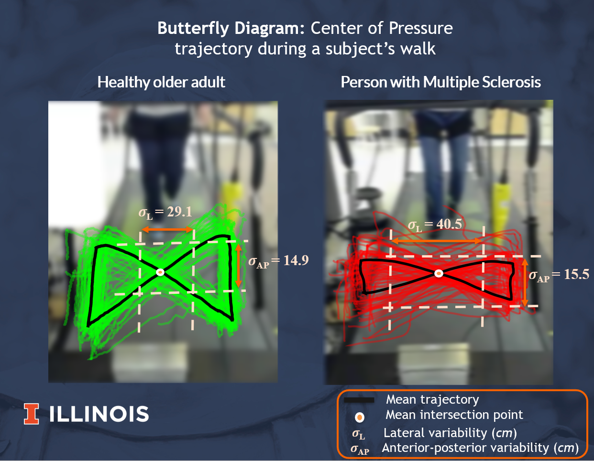 |
Vipul Satone, Rachneet Kaur, Anant Dadu, Hampton Leonard, Hirotaka Iwaki, Mary Makarious, Lana Sargent, Ali Daneshmand, Sonja W. Scholz, Mike A. Nalls, Roy H. Campbell, Faraz Faghri Under Submission, 2020 Project page | arXiv | Code | Interactive website | Cite The machine learning techniques presented in this study may assist providers in identifying different progression rates and trajectories in the early stages of the disease, hence allowing for more efficient and personalized healthcare deliveries. |


|
|
|
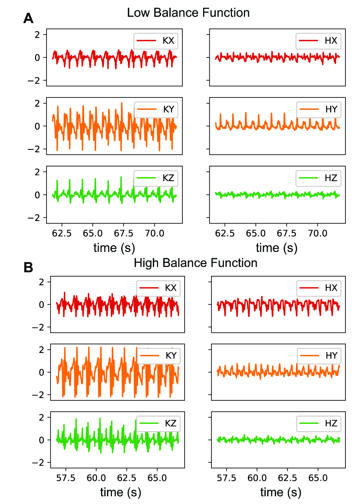 |
Yang Hu*, Alka Bishnoi*, Rachneet Kaur, Richard Sowers, Manuel Hernandez 42nd Annual International Conference of the IEEE Engineering in Medicine & Biology Society (EMBC), 2020 Project page | Paper | Slides | Video | Cite Examining the feasibility of using wearable sensors, when walking, to identify older adults who have trouble with balance at an early stage. |
|
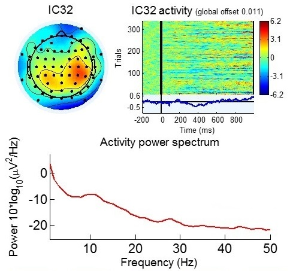 |
Rachneet Kaur, Maxim Korolkov, Manuel Hernandez, Richard Sowers 42nd Annual International Conference of the IEEE Engineering in Medicine & Biology Society (EMBC), 2020 Project page | Paper | Slides | Video | Cite Automated removal of unwanted artifacts on noisy and visually engaging upright stance Electroencephalography (EEG) data. |
|
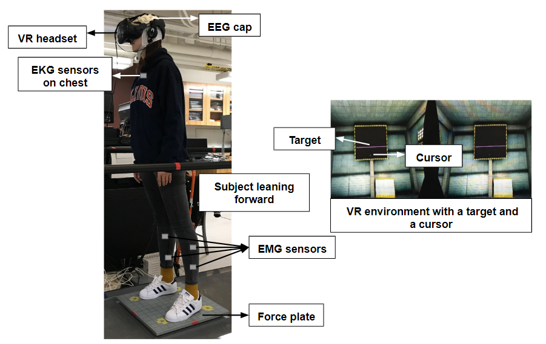 |
Rachneet Kaur, Rongyi Sun, Liran Ziegelman, Richard Sowers, Manuel Hernandez IEEE-RAS 19th International Conference on Humanoid Robots (Humanoids), 2019 Project page | Paper | Slides | Video | Cite Letting NeRF reason about occluders and appearance variation produces photorealistic view synthesis using only unstructured internet photos. |
|
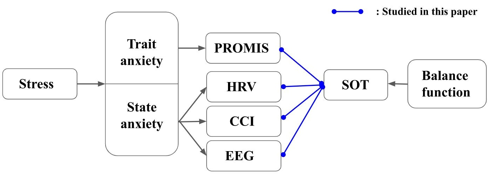 |
Rongyi Sun*, Rachneet Kaur*, Liran Ziegelman, Shuo Yang, Richard Sowers, Manuel Hernandez IEEE International Conference on Bioinformatics and Biomedicine (BIBM), 2019 Project page | Paper | Slides | Video | Cite Examining the interaction between balance function and anxiety via a VR-based experimental setup, designed to simulate stressful environments involving postural threats. |
|
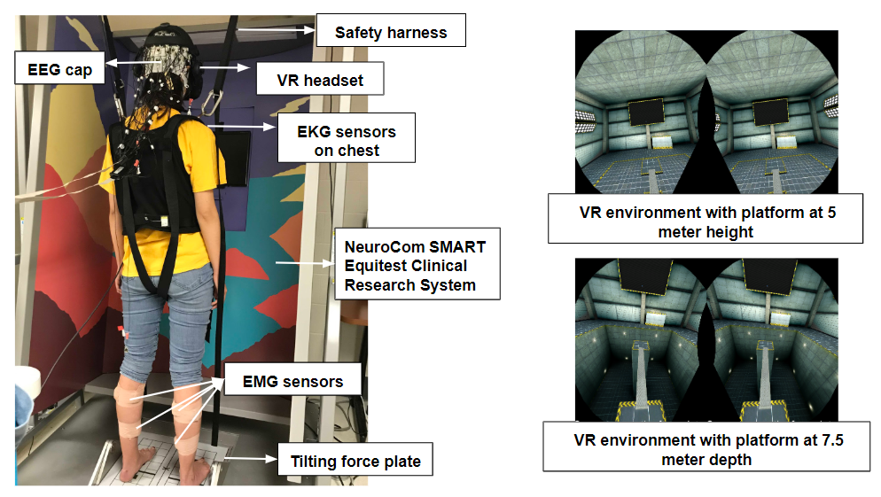 |
Rachneet Kaur, Rongyi Sun, Liran Ziegelman, Richard Sowers, Manuel Hernandez 41st Annual International Conference of the IEEE Engineering in Medicine & Biology Society (EMBC), 2019 Project page | Paper | Poster | Cite XXX Description XXX |

|
Rachneet Kaur, Sanjana Menon, Richard Sowers, Manuel Hernandez 41st Annual International Conference of the IEEE Engineering in Medicine & Biology Society (EMBC), 2019 project page | Paper XXX Description XXX |
|
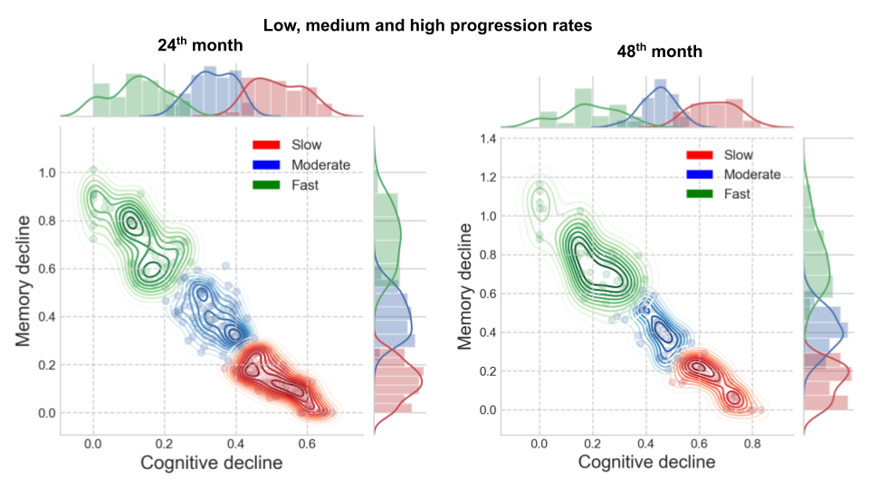 |
Vipul Satone, Rachneet Kaur, Faraz Faghri, Mike A Nalls, Andrew B Singleton, Roy H Campbell Machine Learning for Health (ML4H), Neural Information Processing Systems (NeurIPS), 2018 Project page | arXiv | Poster | Code | Blog XXX Description XXX |
|
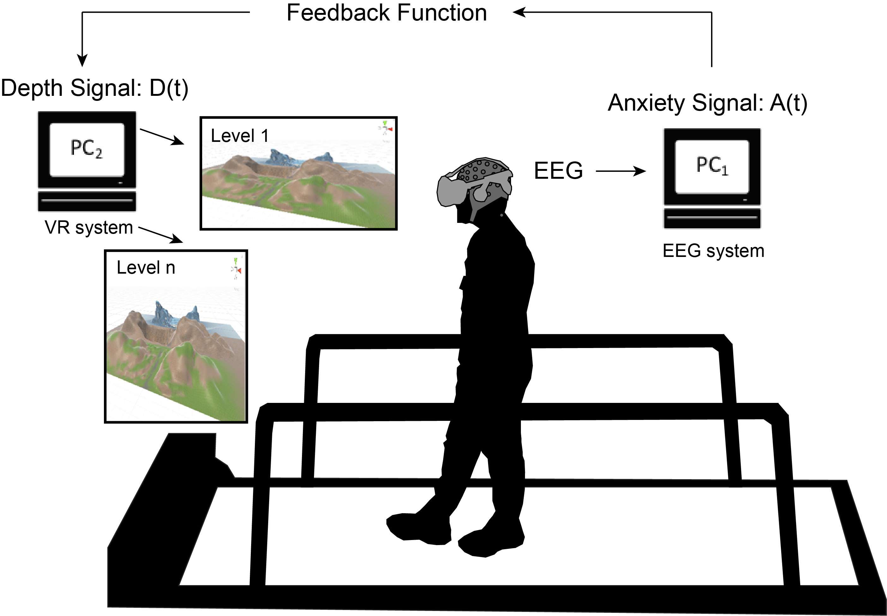 |
Rachneet Kaur, Xun Lin, Alexander Layton, Richard Sowers, Manuel Hernandez 40th Annual International Conference of the IEEE Engineering in Medicine & Biology Society (EMBC), 2018 Paper XXX Description XXX |


- Dec 2025Hierarchical Agentic Framework for Multi-Page Visual Document UnderstandingApplicationJ.P. Morgan Chase
- Oct 2025Multimodal Agent for Performing Tasks Associated with ChartsApplicationJ.P. Morgan Chase
- Jul 2025Method and System for Generating a Large Language Model Modular Framework That Constructs a Digital Time Series Analytics ReportApplicationJ.P. Morgan Chase
- Apr 2025Method and System for Generating a Multi-modal Large Language Model Web Agent For Autonomous Execution of a Virtual ActionApplicationJ.P. Morgan Chase
- Aug 2024Method and system for leveraging language embeddings for time series classificationsUS 2026/0044760J.P. Morgan Chase
- Jul 2024Systems and method for evaluating large language models for time series feature understandingUS 2025/0342353J.P. Morgan Chase
- Dec 2023Method and system for using image analysis for time series forecastingUS 2025/0209049J.P. Morgan Chase
- Oct 2023Method and system for time-series adaptive domain-aware captioningUS 2025/0111165J.P. Morgan Chase
- Aug 2023Systems and methods for convolutional neural network and transformer-based time series modelingUS 2025/0045566J.P. Morgan Chase
- May 2020Methods and systems for path-based mapping and routingUS 12,031,8263M
|
|
|
Rachneet Kaur, Manuel Hernandez, Richard Sowers Virtual Reality: Recent Advancements, Applications and Challenges, River Publishers, 2020 Project page | Chapter | Book | Cite (chapter) | Cite (book) This chapter is primarily aimed at establishing and understanding underlying fluctuations relative to anxiety in human postural control using immersive virtual conditions. |
|
|
| Sep 2021 |
Deep Learning for Multiple Sclerosis Prediction using Multi-Stride Dynamics in Gait
11th International Symposium on Gait and Balance in Multiple Sclerosis |
| Aug 2021 |
Adaptive Control of Stride Length in Response to Perturbations While Walking in Older Women with Osteoarthritis
American Society of Biomechanics (ASB) Annual Meeting, 2021 |
| Predicting Multiple Sclerosis from Gait Dynamics | |
| Nov 2020 | Graduate Seminar Series, Industrial & Enterprise Systems Engineering (ISE), UIUC [Video] |
| Sept 2020 | ACM poster presentation session, Virtual Grace Hopper Celebration for Women [Poster] |
| Nov 2019 |
Using Virtual Reality High Fall-Risk Condition Training to Improve Postural Control Accuracy and Speed
American Congress of Rehabilitation Medicine 96th Annual conference, Progress in Rehabilitation Research |
| Oct 2019 |
Using Virtual Reality to examine the correlation between balance function and anxiety in a quiet stance
Biomedical Engineering Society (BMES) Annual Meeting |
| Predicting Multiple Sclerosis Disorder from Gait Patterns [Slides] | |
| May 2019 | Illinois Geometry Lab Poster Session, Department of Mathematics, UIUC |
| Mar 2019 | 9th International IEEE EMBS Conference on Neural Engineering (NER) |
| IoT Dishwasher [Slides] | |
| Mar 2019 |
Presented by ISE undergraduate students at the Undergrad Research Symposium, UIUC and the Engineering Open House, UIUC |
| Apr 2018 | Demo for John Deere's visit, ISE, UIUC |
| Nov 2017 | Demo at the Mottier Innovation Challenge in Systems Engineering, UIUC |
| Sept 2018 |
Visual Cliffs, Virtual Reality and Movement Disorders [Poster]
ACM poster presentation session, Grace Hopper Celebration for Women |
| Apr 2018 |
Predicting the progressions of Alzheimer’s disease using Machine Learning [Poster]
2nd Illinois Health Data Analytics Summit |
| Feb 2018 | Optimal IoT Control for Power Consumption |
| Coordinated Science Laboratory Student Conference, UIUC [Poster] | |
| IEEE Power and Energy Conference (PECI) at Illinois [Poster] | |
| Oct 2017 |
A Brain computer interface approach to examine changes in anxiety while walking in a virtually infinite world
Biomedical Engineering Society (BMES) Annual Meeting [Video] |
| Apr 2015 |
Computing with words [Poster]
Engineering Open House, Indian Institute of Technology (IIT) - Delhi |
|
|
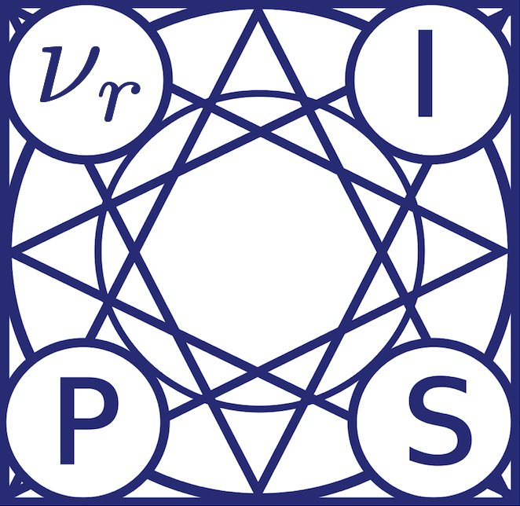 |
Program Committee: Medical Imaging meets NeurIPS (MED-NeurIPS), NeurIPS [2021] Machine Learning for Health (ML4H), NeurIPS [2020] [2021] Fair ML for Health, NeurIPS [2019] Medical Imaging meets NeurIPS (Med-NeurIPS), NeurIPS [2019] [2021] Machine Learning for Health (ML4H), NeurIPS [2019] [2020] [2021] Machine Learning in Public Health, NeurIPS [2021] Machine Learning and the Physical Sciences, NeurIPS [2020] Fair ML for Health, NeurIPS [2019] Women in Machine Learning (WiML), NeurIPS [2018] |
|
Graduate Mentor: Illinois Geometry Lab, Department of Mathematics, UIUC, Spring 2017, Fall 2017, Spring 2018, Fall 2018, Spring 2019 |
|
|
Graduate Teaching Assistant: CS547/IE534 Deep Learning, UIUC, Fall 2019 IE361 Production Planning and Control, UIUC, Spring 2019 IE 300 Analysis of Data, UIUC, Fall 2016, Spring 2017, Fall 2017, Spring 2018, Fall 2018 |
|
|
Leadership: Open House Coordinator, IIT-Delhi, Mar-Apr 2016 Event Management Volunteer, Rubic's Cube Indian Nationals, IIT Delhi, Feb-Mar 2016 Publicity Volunteer, Spic Macay, IIT Delhi, Jan-Mar 2016 Event Management Volunteer, Tryst, IIT Delhi, Jan-Mar 2015 |
|
At UIUC, I have had a chance to work with and mentor some excellent students: |
|
• Daan Michiels (Currently Senior Quantitative Researcher at G-Research)
• Vivek Kaushik (Currently PhD candidate at the Department of Mathematics, UIUC) • Yankun Zhao (Currently MS in Computer Science candidate at Yale University) • Zhonghao (Dennis) Zhao (Currently MS in Analytics candidate at Northwestern University) • Maxim Korolkov • Zizhang Chen |
|
|